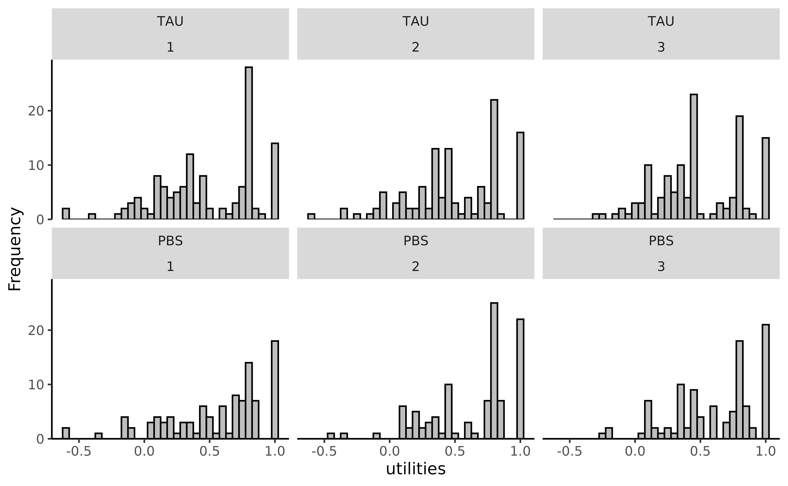
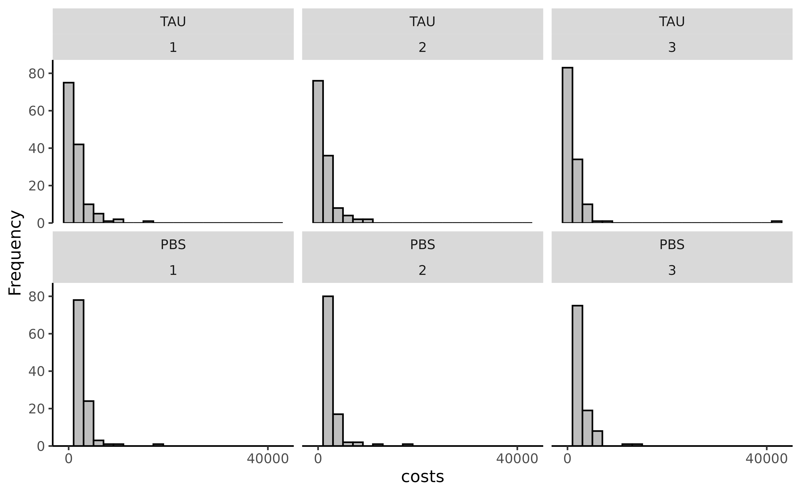
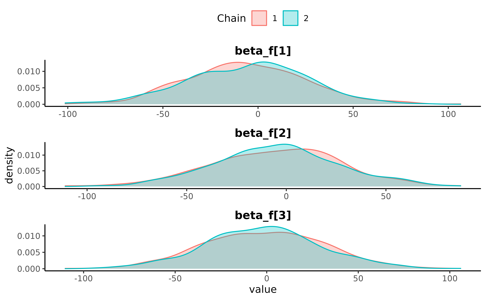
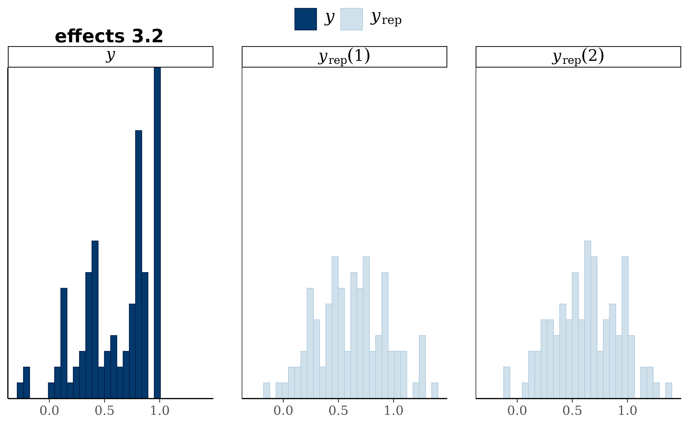
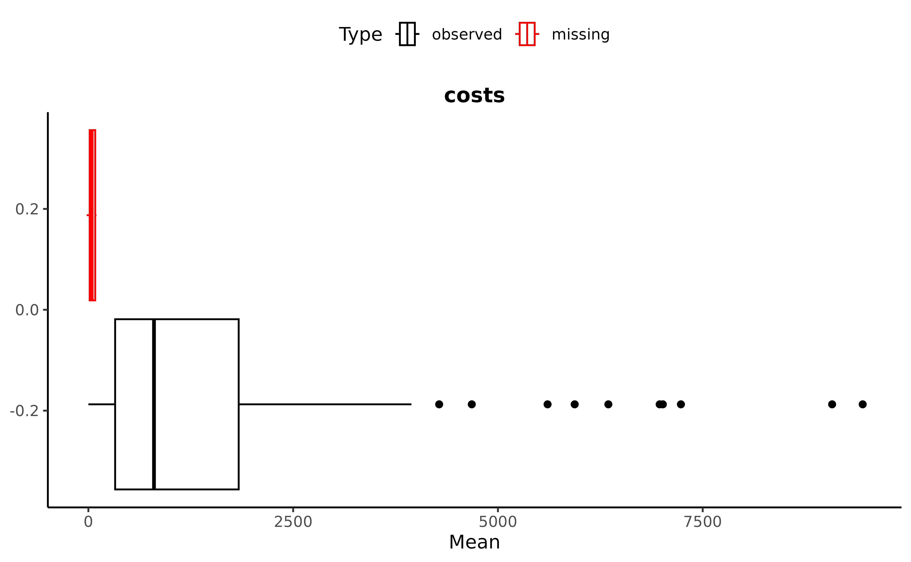
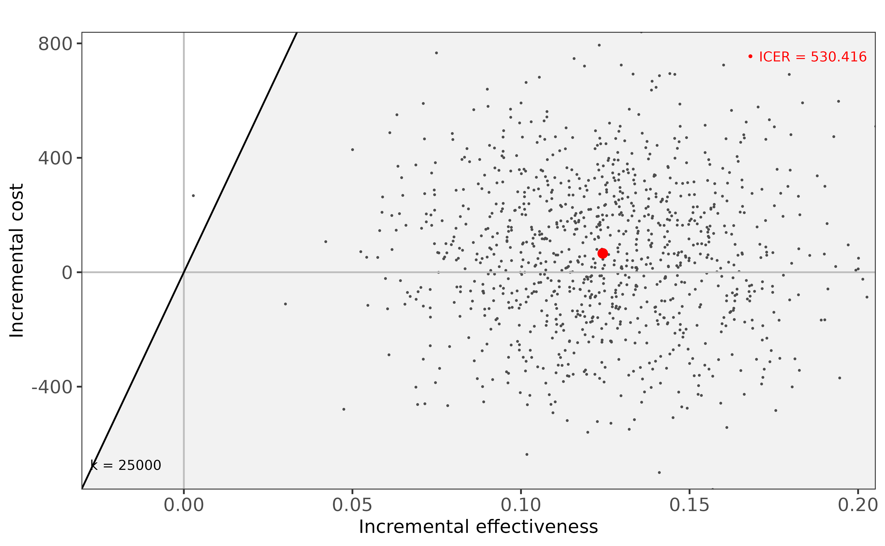
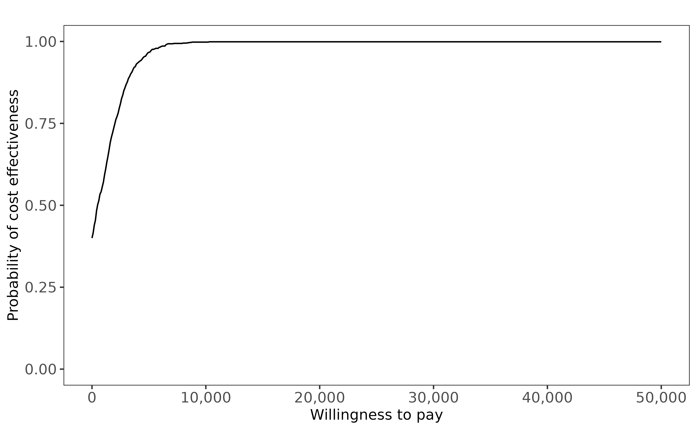

Longitudinal models in missingHE
Source:vignettes/Longitudinal_models_in_missingHE.Rmd
Longitudinal_models_in_missingHE.RmdThe historical analysis framework of trial-based economic evaluations focusses on the modelling of individual-level effectiveness and cost variables , i.e., QALYs and Total costs. This because: 1) key quantities of interest, i.e., the mean parameters and related incremental quantities, can be easily derived from a bivariate model fitted to ; 2) when health economic outcomes are derived from longitudinal data collected at multiple occasions , the modelling of is considerably simplified compared to a multivariate model for .
However, when the longitudinal responses are subject to missingness, i.e., and , a cross-sectional model is often inadequate since information from partially-observed responses will be ignored in the analysis. As a result, the specification of a joint model for provides an intuitive approach as a relatively simple extension of the standard cross-sectional framework. In addition, the model can be easily customised to: retrieve the estimates of interest while taking into account the evidence from any observed responses; conduct sensitivity analysis to alternative missingness assumptions.
If partially-observed longitudinal data are available,
missingHE allows the user to fit a joint longitudinal model
using the dedicated function lmdm, which mimics the
modelling strategy of a longitudinal selection model. The function
requires the specification of a model for the effectiveness
(model.eff) and cost (model.cost) variables as
well as a conditional model (i.e., mechanism) for the missing
effectiveness (model.me) and costs (model.mc).
The main difference compared to standard selection models is that,
rather than directly modelling the missingness indicators,
lmdm specifies a model for the longitudinal missing data
pattern indicators
and
,
where
and
denote the binary missingness indicators of the responses at time
.
As an example, consider a partially-observed effectiveness variable
and let
denote the corresponding longitudinal missingness pattern indicator.
Although
could be associated with different values, depending on the specific
pattern combinations based on the values of
,
a possible way to simplify the specification of the model is to reduce
the number of modelled patterns by aggregating some of the observed
patterns together. In particular, missingHE specifies the
model using three distinguished types of patterns and assigns each of
them with a specific indicator value: 1)
for the complete cases, i.e.,
for any
;
2)
for intermittent missingness, i.e.,
and
for at least some time
;
3)
for dropout, i.e.,
and
for only
.
This tutorial shows how to specify longitudinal models using the
function lmdm alongside the available customisation options
in the package. Throughout, we will use the built-in dataset
PBS as a toy example, which is directly available when
loading missingHE in the user’s R workspace.
See Introduction to
missingHE for an introductory tutorial of each type of missingness
approach in missingHE.
If you would like to have more information on the package, or would like to point out potential issues in the current version, feel free to contact the maintainer at a.gabrio@maastrichtuniversity.nl. Suggestions on how to improve the package are also very welcome. A development version of the package is also available from the author’s main GitHub repository at https://github.com/AnGabrio/missingHE.
Modelling Framework
Trial-based health economic disaggregated data consist in the longitudinal cost-effectiveness pair of variables , collected on the -th patient at time assigned to the -th treatment in the study, for patients, time points and treatment options. In many jurisdictions the recommended effectiveness variable is a Health-Related Quality of Life (HRQoL) measure, typically in the form of utility scores computed from the patients’ answers to generic health-related quality of life questionnaires (e.g., EQ-5D) collected at given time intervals in the study. The cost variable denotes the sum of all relevant patient-level costs (e.g., direct/indirect medical costs, productivity losses, etc.), collected from the patients’ answers to some types of healthcare-resource utilisation questionnaires or medical records at different times.
missingHE models the observed variables
using a joint bivariate probability distribution with density
as a function of a vector of relevant parameters
,
implemented using a series of conditional model factorisations. In
particular, at
,
the model can be represented as:
where denotes the conditional effectiveness distribution at time given past responses () and the conditional cost distribution at given current () and past responses (), with and being the treatment- and time-specific set of parameters indexing the effectiveness and cost distributions, respectively. To simplify notation, we now drop the treatment index .
Both outcome densities in Equation @ref(eq:biv) are specified using some parametric forms for the probability distributions to describe the underlying uncertainty in the cost-effectiveness data. The set of model parameters can be generally represented as where: denotes the set of location parameters (e.g., mean) and the set of ancillary parameters (e.g., variance) indexing the outcome distributions, both depending on some vector of potential baseline covariates (e.g., age, sex, etc…). While it is possible for both and to explicitly depend on , the model is usually simplified assuming that these only affect the location parameters through a generalised linear formulation. For example, the location parameter of the effectiveness model is specified as:
and the location parameter of the cost model as:
where the regression coefficients
and
are included to capture the possible time dependence between
and
at the location level. Note that, through the argument
time_dep in lmdm, missingHE
allows the user to choose among three alternative specifications of
Equation @ref(eq:glme) and Equation @ref(eq:glmc) based on different
assumptions about the response time dependence: 1) "none"
requires no time dependence by setting
;
2) "biv" requires dependence only between outcomes at the
same time by setting
;l
3) "AR1" requires an autoregressive of order one structure
by not imposing any further restrictions on the regression
parameters.
Covariates may be included into the model at different scales using the link functions and , being either identity, logarithmic or logit, depending on the type of outcome and distribution specified. Equation @ref(eq:glme) and Equation @ref(eq:glmc) can also be extended, as indicated by , to include additional terms into the model, e.g., clustering effects. The objective of the statistical analysis is the estimation of population average time-specific effectiveness and cost parameters in each treatment arm and quantify the (posterior) uncertainty around them. Estimates of these parameters can be obtained from Equation @ref(eq:glme) and Equation @ref(eq:glmc) either from their respective regression parameters after mean centring all covariates or through repeatedly sampling from the predictive distribution of the model via Monte Carlo integration. Finally, estimates of aggregated mean parameters computed over the entire study period are usually obtained through linear combination of the time-specific average estimates. For instance, in the case of QALYs, aggregated mean response estimates can be derived by applying an Area Under the Curve (AUC) approach:
where denotes the weight used in the AUC calculation, with being the percentage of the time unit (often year) covered between the time interval and . As an example, if responses were collected at equally-spaced time intervals, say every months, over a one-year study period, then for any . In the case of Total costs, aggregated mean response estimates can be typically derived as:
where setting
would correspond to an unweighted sum. Note that, after
missingHE derives estimates for
from Equation @ref(eq:glme) and Equation @ref(eq:glmc), it automatically
computes the aggregated estimates
using the approaches described in Equation @ref(eq:mue) and Equation
@ref(eq:muc) assuming default values of
and
for all
.
However, the function lmdm allows the user to modify these
values through the optional arguments w_e and
w_c, which can be provided either as single values (same
value to each
)
or as vectors of length
(custom value to each
).
This level of customisation allows the user to directly derive
aggregated mean cost-effectiveness estimates and use them in the
computation of all CEA output.
Assuming that the location parameters are modelled using a linear
predictor as in Equation @ref(eq:glme) and Equation @ref(eq:glmc),
priors on the corresponding sets of regression coefficients can be
specified as
and
,
where the notation
and
denotes the time-specific prior mean and standard deviation,
respectively. By default, missingHE assumes “minimally
informative” prior values of
and
for all regression coefficients. When genuine prior knowledge on
specific parameters is available, it is possible to modify the default
priors and elicit the corresponding information into the model. As for
the ancillary parameters, the choice of the prior values depends on the
form of the probability distribution selected according to the modelling
choices available in missingHE.
Missingness Approach
missingHE specifies the model for the aggregated
missingness patterns
()
through a selection model approach, where the pattern-specific
probabilities
are estimated using a multinomial (log) regression, conditional on
possibly fully-observed baseline covariates
and partially-observed outcomes
().
For example, the missingness effectiveness model is specified as
where the upperscript
indicates the pattern category (1 = completers, 2 = intermittent, 3 =
dropout),
is a vector with entries set to one if
and zero otherwise,
is the set of time- and pattern-specific regression coefficients, while
is the time- and pattern-specific MNAR parameter. Note that an
equivalent specification to Equation @ref(eq:lmdme) for the missingness
model of the longitudinal costs can be used in
missingHE.
According to Equation @ref(eq:lmdme), it is clear that alternative assumptions about the missingness mechanism can be encoded into the model. In particular: a Missing Completely At Random (MCAR) assumption is specified when all regression coefficients, except , are zero; a Missing At Random (MAR) assumption when and one or more coefficients among is/are not zero; a Missing Not At Random (MNAR) when any . Under MNAR the model can only be identified by imposing some restrictions. These are implicitly defined from a combination of parametric assumptions about and dependence structure assumed for . As a result, sensitivity analysis to assess the impact of alternative missingness assumptions on the inferences can be done by: varying the distributional assumption of ; varying the modelling structure in Equation @ref(eq:lmdme); and, within a Bayesian setting, varying the prior distribution on .
The PBS trial
We use data from a real clinical study to illustrate how a
longitudinal missingness model for trial-based economic evaluations can
be specified using the function lmdm from
missingHE. The PBS was a multicentre randomised controlled
trial conducted on people suffering from intellectual disability and
challenging behaviour. A total of
individuals were enrolled in the trial,
in the Treatment As Usual (TAU) and
in the treatment of care plus the Positive Behavioural Support
intervention (PBS). For all individuals, key health economic outcomes
were collected via self-reported questionnaires (e.g., EQ-5D) at
baseline,
and
months follow-ups.
After loading the package, for example by typing
library(missingHE), the PBS dataset (PBS) is
directly imported into the R workspace and can be inspected
using the command
> rbind(head(PBS), tail(PBS))to show the first and last few rows:
#> id time e c age gender ethnicity living carer marital disability site trt
#> 1 1 0.17300001 9214.0 31 0 1 3 0 0 3 7 1
#> 2 1 0.85000002 2492.5 51 0 1 1 1 0 2 7 1
#> 3 1 -0.16599999 15283.0 53 1 1 1 1 0 1 5 1
#> 4 1 0.25800008 1858.0 30 0 1 3 0 0 2 5 1
#> 5 1 0.03800001 797.0 46 0 1 3 1 0 2 5 1
#> 6 1 1.00000000 358.0 44 0 0 3 1 0 1 5 1
#> 239 3 NA NA 33 1 1 2 0 0 3 4 1
#> 240 3 0.81500006 150.0 33 0 0 3 1 0 2 15 1
#> 241 3 0.45200008 1740.0 52 0 0 3 1 0 3 22 2
#> 242 3 0.88300002 105.0 32 0 1 3 1 0 3 23 1
#> 243 3 0.81500006 2372.0 50 0 0 1 1 0 3 2 2
#> 244 3 0.81500006 1630.0 27 1 0 2 0 0 2 2 2The dataset consists of
individuals grouped in two arms, where trt
indicates the TAU and trt
the MenSS intervention, with id and time
denoting the participant identification number and measurement occasion,
respectively.
Key health economic variables are e and c,
which denote the HRQoL utility and cost longitudinal outcomes,
respectively. All baseline variables are fully-observed, whereas all
outcome variables are partially-observed in both arms. There is a total
of 679
(93)
outcome observations, of which 371 in the TAU and 308 in the PBS arm,
while the remaining 53 observations are missing. Figure @ref(fig:fig1e)
and Figure @ref(fig:fig1c) show the histograms of the observed
distributions for the utility and cost variables in PBS,
separately by arm and time point.

Histograms of the observed data distributions for the utilities in the TAU and PBS arm by time point.

Histograms of the observed data distributions for the costs in the TAU and PBS arm by time point.
Model fitting
missingHE relies on JAGS through the
function lmdm to implement the longitudinal missingness
approach while providing a series of customisation options. Key options
include: choice of the probability distribution for the effectiveness
and cost variables, choice of the regression model for each outcome, and
type of missingness mechanism assumed.
A set of pre-defined choices in terms of probability distributions
for the effectiveness (e) and/or cost (c)
variables are available. The user may select a given distribution by
passing the corresponding missingHE name to the arguments
dist_e and dist_c of the desired function. The
outcome model
requires a separate specification of the effectiveness and cost model
formula using the notation:
model.eff <- e ~ trt + ...
model.cost <- c ~ trt + ...where e, c and trt indicate
the effectiveness, cost and treatment variable names stored in the
dataset, while ... is a suitable form for the combination
of covariates in each model. Dependence between the two models can be
specified by adding the term e as an additional covariate
into the cost model and by specifying the type of time dependence
structure assumed for the model through the argument
time_dep. Current available choices are: 1)
"none" for complete independence, which also requires
e to not be included in model.cost; 2)
"biv for bivariate dependence at each time, where
dependence between
and
is only allowed at the same time
;
3) "AR1 for order one autoregressive structure as in
Equation @ref(eq:glme) and Equation @ref(eq:glmc). Note that the
treatment indicator trt must be included into both
regression formulae and should be coded as a factor variable in the
dataset. Conversel, the time indicator time should not be
included into the model formulae and should be coded as a numeric
(integer) variable in the dataset. The missingness assumption for each
outcome is specified through the argument type, by setting
type = "MAR" or type = "MNAR" to select
between a MAR or MNAR mechanism, respectively.
As an example, a suitable call to lmdm is the
following.
fit.model <- lmdm(data = data, model.eff = model.eff,
model.cost = model.cost, dist_e = dist_e, dist_c = dist_c,
type = type, time_dep = time_dep, ...)where data is a dataframe object, model.eff
and model.cost are the formulae for the effectiveness and
cost regression models, dist_e, dist_c,
type and time_dep are character values
indicating the chosen outcome distributions, type of missingness
mechanism and time dependence, while ... indicates
additional optional arguments. In practice, unless there is a clear
understanding of the implications of any change to the default model
structure, the user is not required to modify the default values of
these optional arguments. The only exception is related to: number of
MCMC chains (n.chains), number of iterations
(n.iter) and values of the parameters of the prior
distributions (prior). As an example, consider the default
priors for the linear predictor coefficients in the effectiveness and
cost model, namely
and
.
Suppose the user wants to select different prior mean and standard
deviation values for these parameters. This can be done by typing
which instructs missingHE to separately assign normal
distributions to each regression coefficient in the models with prior
mean of
and precision (inverse of variance) of
.
The list myprior can be then passed to the optional
prior argument in the chosen model fitting function to
implement the model using the updated priors.
fit.model <- lmdm(data = data, model.eff = model.eff,
model.cost = model.cost, dist_e = dist_e, dist_c = dist_c,
type = type, time_dep = time_dep, prior = myprior)Note that the list and its elements need to be named using the
missingHE accepted terminology for parameters and
distributions. If the option save_model is set to
TRUE, the JAGS model template is saved in the
current working directory and can be used to further modify the model
structure. This, however, will require a new compilation of the model
and, at present, the new model has to be run using dedicated commands,
such as rjags from the R2jags package.
Fitting models under MAR
We consider the following common model specification: e
and c are both normally distributed with no covariates
included in their models; a MAR mechanism is assumed for both outcomes,
and a bivariate structure is assumed for the time dependence. For
demonstrative purposes and to ease presentation of results, in this
tutorial we only consider models fitted under MAR. See Fitting MNAR models in
missingHE for an overview about how informative missingness models
can be fitted in missingHE.
The model is implemented using the function lmdm.
> lmdm1_mar <- lmdm(data = PBS, dist_e = "norm", dist_c = "norm",
+ model.eff = e ~ trt, model.cost = c ~ trt + e,
+ model.me = me ~ 1, model.mc = mc ~ 1, time_dep = "biv",
+ type = "MAR", n.iter = 1000, ref = 2)The arguments model.me and model.mc denote
the missingness mechanism as in Equation @ref(eq:lmdme) for both
outcomes. Since no covariates are included in model.me and
model.mc, the utility and cost mechanisms are assumed MAR
(type = "MAR") conditional on the observed outcome values.
The argument ref = 2 is used to specify which study arm
should be used as the reference group in the comparison, i.e.,
incremental results are reported here as trt = 2
("PBS") vs trt = 1 ("TAU").
Model assessment
Prior to inspecting the posterior results, it is important to assess
model performance and convergence of the MCMC algorithm.
missingHE provides three functions to compute and implement
different types of popular Bayesian model assessment measures and plots,
namely diagnostic, ppc and
pic.
Convergence diagnostics
The function diagnostic provides a range of standard
diagnostic tools and plots for assessing convergence based on the
posterior distribution of a Bayesian model fitted in
missingHE. Consider the output of the model stored in the
object lmdm1_mar; we may use the command
> diagnostic(x = lmdm1_mar, type = "denplot", param = "beta.f")to produce “density plots” for the regression parameters associated with the effectiveness variable within the cost models. In this case, as displayed in Figure @ref(fig:fig2), no major issues in convergence are identified for these parameters.
#> Loading required namespace: ggmcmc
Checking convergence using the diagnostic function for a model fitted in missingHE, for example through inspection of density plots.
With the exception of the argument x, which must be an
object of class "missingHE", all other arguments can be
used to customise the output of the function. A full description of the
choices for each argument, including the available types of diagnostic
tools and families of parameters, is provided in the help file of the
package. Note that the output produced by diagnostic is
effectively a ggplot2 object, and can therefore be
manipulated by the user using functions from packages which allow to
customise such objects.
Posterior predictive checks
The function ppc provides a range of graphical posterior
predictive checks for assessing the fit of a Bayesian model implemented
in missingHE. Consider the output of the model fitted in
Section @ref(lmdm-marmodel) and stored in lmdm1_mar; we may
use the command
> ppc(x = lmdm1_mar, type = "histogram", outcome = "effects",
+ ndisplay = 2, time.plot = 3, trt = "2")to plot the densities of ndisplay
replications of the effectiveness data (light blue lines) with respect
to the density of the observed data (dark blue line) in the PBS
(trt = 2) arm. The argument time.plot
indicates for which times the comparison between observed and replicated
data should be plotted, here the third time point is selected (default
).
Figure @ref(fig:fig3) shows some discrepancies between the replicated
and observed data histograms, likely due to the relatively poor fit of
the current model (i.e., the normality assumption of e) to
the observed data in both arms.

Posterior predictive graphical checks using the ppc function for a model fitted in missingHE, for example through inspection of histograms.
A full description of the choices for each argument in
ppc, including the available types of posterior predictive
checks, is provided in the package help file. Note that the arguments in
ppc may also be used to generate graphs for any combination
of treatment arms and time points available in the dataset: for example,
graphs corresponding to those shown in Figure @ref(fig:fig3) for only
the PBS arm at all time points may be requested by setting
trt = 2 and time.plot = "all".
Predictive information criteria
The function pic allows to assess the relative
predictive accuracy of models fitted in missingHE by
computing alternative Bayesian information criteria. As an example,
consider again the model results stored in lmdm1_mar; we
may use the command
> pic_lmdm1_mar <- pic(x = lmdm1_mar, criterion = "looic", cases = "cc")to return a named list containing a series of components used in the
calculation of the selected information criterion. In this case,
leave-one-out information criterion (LOOIC) was selected as specified in
criterion = "looic" based only on the complete cases in the
dataset (cases = "cc"). Its value may be inspected by
typing:
> pic_lmdm1_mar$looic
#> [1] 14260.39Note that all information criteria in missingHE can only
be used as relative measures of fit to compare models, with lower values
typically indicating better fit. In addition, predictive information
criteria are ideally evaluated based on the observed data alone (or
after integrating out missingness under MAR). As a result, computing
these measures based on the complete cases provides a “safe” choice when
comparing the fit of alternative models. pic allows
alternative choices for cases, whose appropriateness should
be considered by the user based on the context at hand (e.g., amount and
type of missing data). Current choices are: complete cases
(cc), available cases for the effectiveness
(ac_e), available cases for the costs ("ac_c")
or all cases (all).
Finally, pic allows to compute information criteria for
multiple missingHE objects by simply replacing the argument
x with a list of models generated using the functions in
the package. For example, suppose an additional longitudinal model was
fitted using lmdm and its output stored in an object named
lmdm2_mar. Then, the desired predictive information
criteria may be computed for both models by typing:
> pic_compare_mar <- pic(x = list(lmdm1_mar, lmdm2_mar),
+ criterion = "looic", cases = "cc")A full description of the different types of output associated and input choices is provided in the package help file.
Results inspection
Summarise parameter estimates
Summary statistics computed based on posterior samples of model
parameters, directly generated from JAGS, may be accessed
using the postsum function by typing
> postsum(lmdm1_mar, display = "fixed")which returns
#> Call:
#> lmdm(model.eff = e ~ trt, model.cost = c ~ trt + e, model.me = me ~
#> 1, model.mc = mc ~ 1, data = PBS, dist_e = "norm", dist_c = "norm",
#> type = "MAR", time_dep = "biv", n.iter = 1000)
#>
#> Coefficients:
#> $model.eff
#> (Intercept).1 trt2.1 (Intercept).2 trt2.2 (Intercept).3 trt2.3
#> 0.477 0.082 0.497 0.141 0.482 0.134
#>
#> $model.cost
#> (Intercept).1 trt2.1 (Intercept).2 trt2.2 (Intercept).3 trt2.3 e.1 e.2 e.3
#> 55.880 31.853 54.103 32.457 33.520 20.906 -5.789 -4.822 -1.703
#>
#> $model.me
#> (Intercept).1.r.1 (Intercept).2.r.1 (Intercept).3.r.1 (Intercept).1.r.2 (Intercept).2.r.2 (Intercept).3.r.2 (Intercept).1.r.3 (Intercept).2.r.3 (Intercept).3.r.3
#> 0.815 2.423 0.630 -1.346 0.259 -1.535 -1.752 -0.134 -1.926
#>
#> $model.mc
#> (Intercept).1.r.1 (Intercept).2.r.1 (Intercept).3.r.1 (Intercept).1.r.2 (Intercept).2.r.2 (Intercept).3.r.2 (Intercept).1.r.3 (Intercept).2.r.3 (Intercept).3.r.3
#> 0.389 1.736 6.784 -3.528 -2.198 2.852 -2.802 -1.423 3.605missingHE standardises the format of the output to
report summary quantities related to key model parameters, including the
mean effectiveness and costs at each time point across treatment arms on
their natural scale. Estimates of posterior mean (mean),
standard deviation (sd) and
credible interval boundaries (2.5% and 95.5%)
can be used to summarise the posterior distribution of these parameters.
In addition, the MCMC diagnostics Rhat and
n.eff, corresponding to the potential scale reduction
factor and effective sample size diagnostics, are provided and can be
used to assess convergence for these parameters.
Summary statistics for the regression coefficients on the scale
defined by the linear predictor of the effectiveness and cost models
,
as defined in Section @ref(sec-frame), may also be displayed using the
coef function by typing
> coef(lmdm1_mar)which returns
#> $Effects
#> Mean SD QL QU
#> (Intercept).1 0.477 0.034 0.411 0.547
#> trt2.1 0.082 0.048 -0.003 0.177
#> (Intercept).2 0.497 0.032 0.437 0.558
#> trt2.2 0.141 0.047 0.051 0.234
#> (Intercept).3 0.482 0.028 0.428 0.540
#> trt2.3 0.134 0.043 0.050 0.215
#>
#> $Costs
#> Mean SD QL QU
#> (Intercept).1 55.880 30.938 -3.508 118.929
#> trt2.1 31.853 32.792 -34.664 94.788
#> (Intercept).2 54.103 30.827 -3.999 116.096
#> trt2.2 32.457 32.434 -31.262 95.926
#> (Intercept).3 33.520 32.970 -28.906 98.342
#> trt2.3 20.906 31.369 -42.101 82.585
#> e.1 -5.789 31.497 -65.421 57.390
#> e.2 -4.822 31.768 -66.864 58.480
#> e.3 -1.703 32.187 -64.000 62.265The regression output is separately reported by outcome. The
following parameter estimates are reported at each time point in the
model: the intercepts
(Intercept) in the effectiveness model; the intercepts
(Intercept) and effectiveness coefficients
e in the cost model. For each regression parameter,
estimates are summarised using posterior means (mean),
standard deviations (sd) and credible interval boundaries
(lower and upper), the latter being calculated
assuming by default a credible level of
.
Inspect imputed values
The function plot allows to visually inspect how missing
outcome data have been imputed from the model, using
ggplot2 as the graphical engine. For example, the
command
> plot(lmdm1_mar, class = "boxplot", outcome = "costs",
> trt = "1", time.plot = 2)displays boxplots of the observed (black dots and boxes) and imputed
(red dots and boxes) effectiveness variables in the "TAU"
(trt = 1) arm at time
based on the model results stored in lmdm1_mar, as shown in
Figure @ref(fig:figplot). Imputed values are represented in terms of
posterior mean values, and their uncertainty by means of corresponding
credible intervals. The arguments class = "boxplot",
outcome = "costs", trt = "1" and
time.plot = 2 instruct missingHE to display
boxplots for the cost outcome in the TAU arm at time
.
#> Loading required namespace: ggthemes
Boxplots of observed and imputed effectiveness data in the TAU arm at time 2 under normal distributions using a longitudinal model.
Note that, similarly to diagnostic, all graphs produced
via plot can be manipulated using ggplot2
functions, e.g., to modify the graphics’ aesthetics, text and
disposition.
Summarise health economic results
Incremental cost-effectiveness results between the reference arm
(trt
)
and each of the other study arms (trt
)
can be obtained by using the summary function and setting
the argument incremental to TRUE.
> summary(lmdm1_mar, incremental = TRUE)Note that the health economic results displayed by
summary are based on aggregated mean effectiveness and cost
parameters
(),
which are implicitly derived from the model estimates at each time
()
using Equation @ref(eq:mue) and Equation @ref(eq:muc) and the weight
quantities (w_e and w_c) specified in
lmdm.
The incremental results produced by summary include:
the mean incremental effectiveness and cost parameters ()
the incremental net monetary benefit (INMB) (), calculated at the given value (willingness to pay threshold).
the estimated mean of the Incremental Cost-Effectiveness Ratio (ICER), which quantifies the cost per incremental unit of effectiveness, computed based on posterior samples as .
The above output compares the cost-effectiveness of the two arms in
the MenSS dataset based on the results of the model stored
in the object lmdm1_mar. For example, in this case,
incremental results suggest that "PBS" is on average
associated with higher QALYs and Total costs with respect to
"TAU", leading to a positive ICER.
Probabilistic sensitivity analysis
A series of built-in functions are also available from the package
BCEA to visually display Probabilistic Sensitivity
Analysis (PSA) results derived from a model fitted in
missingHE. For example, the following commands may be
used
> BCEA::ceplane.plot(lmdm1_mar$cea, graph = "ggplot2")
> BCEA::ceac.plot(lmdm1_mar$cea, graph = "ggplot2") to generate Figure @ref(fig:figplotcea1) and Figure
@ref(fig:figplotcea2), which combines cost-effectiveness plane and
acceptability curve plots obtained from the PSA results stored in
lmdm1_mar$cea.

Inspecting probabilistic sensitivity analysis using BCEA built-in functions, for example using the cost-effectiveness plane.

Inspecting probabilistic sensitivity analysis using BCEA built-in functions, for example using the cost-effectiveness acceptability curve.
In the cost-effectiveness plane, shown in Figure
@ref(fig:figplotcea1), all incremental estimates fall in the
top/bottom-right quadrant (where "PBS" is more effective
than "TAU") and only a few of them are associated with ICER
estimates that are below
(shaded area). In the cost-effectiveness acceptability curve, shown in
Figure @ref(fig:figplotcea2), a positive cost-effectiveness assessment
of "PBS" vs "TAU" is shown for most of the
willingness to pay threshold values
.